DECK: CS::CN
物理层的主要任务
- 网络中硬件设备和传输介质的种类繁多，通信方式也各不相同。物理层应尽可能屏蔽这些差异，让数据链路层感觉不到这些差异。
- 发送方的数据链路层将需要发送的帧交给物理层
- 传输后接收方的物理层将这些帧传递给接收方的数据链路层。
具体地说，物理层确定与传输媒体接口有关的一些特性：
- 机械特性：指明接口所用接线器的形状和尺寸、引线数目和排列、固定和锁定装置等。
- 电气特性：指明在接口电缆的各条线上出现的电压的范围。
- 功能特性：规定物理接口上各条信号线的功能分配和确切定义（各条线上出现各种电压表示何种意义）。
- 规程特性 / 过程特性：定义了各信号线的工作顺序和时序，使得比特流传输得以完成。
2 基本概念
- 数据是需要传送的信息，信号是数据在传输过程中的存在形式。
2.1 link/channel/data rate/baud rate
链路和信道 flashcard
- (物理) 链路 link；承载信号的 physical path
- 一条物理链路可以通通过分时、分频等方式容纳多个 信道 channel (也称为逻辑链路)，每条信道对应着一个发送方和一个接收方。
比特率 bit rate flashcard
- 也可以叫data rate数据率 - 单位时间内传输的信息中 bit 的数目，即 (数据量 / 时间)。
- 单位是 b/s Kb/s Mb/s Gb/s
- 也可以写成 bps Kbps Mbps Gbps
- 注意是 bit/s 不是 Byte/s
- 就算实际发送的比特比数据多【譬如用1111表示1 】，但是data rate不变.也就是说冗余的比特我们不算在内
symbol rate flashcard
- 码元 / 符号 symbol - 用一个数字脉冲表示的一个 k 进制数字。就是一次采样得到的结果，可能包含不同数量的bit。
- 比如假设电平有4档分别编码00，01，10，11，那么一次采样就是2bit数据。那么分辨8个电压的话一次采样的结果就有3bit。
- symbol rate / baud rate - 单位时间内传输的 symbol 数目，即单位时间内可能发生的信号变化次数。就是单位时间采样次数。symbol/second就是baud
例如一个四进制码元（0123，四个）可以携带2bit（log24）信息，那么如果数据率是64kb/s，那么symbolrate是32kbaud（因为2bit/symbol）。当然也存在0.5bit/symbol的情况。
2.2 带宽
带宽相关原理/谐波拟合方波 flashcard
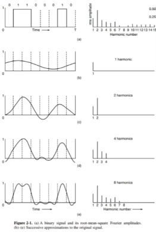
- 用一个一倍基频的谐波（傅里叶分量）拟合方波
- 用一个一倍基频和一个二倍基频的谐波拟合
- 用一个一倍基频和一个二倍基频和一个四倍基频的谐波拟合
- ……
- 谐波越多，拟合方波越成功。但是物理媒体有限制：截止频率fc，超过这个频率的波会有不同的减弱。所以只能使用0-fc频率【带宽/频带宽度】
- 周期：b（需要传输b bit信号）/r（data rate）
- 频率：r/b 周期的倒数
- 那么N*r/b⇐fc N为可以接受的谐波个数，N倍基频不能大于截止频率。可以得到N⇐b*fc/r。
- 因为N越大，信号质量越好，所以r过大时信号质量就会不好。因此在信号质量有一定要求的情况下，带宽越大，数据率就越大。因此数据率的最大值也可以称为带宽
带宽的辨析 flashcard
- (数字) 带宽 (digital) bandwidth：最大可能的 data rate，用来表示通信线路传输数据的能力，频带宽度越大，数据率越大，因此把数据率最大值也叫做带宽。单位与 data rate 一致。
- (模拟) 带宽 (analog) bandwidth：信道的频带宽度，单位是 Hz。带宽是传输介质的一种物理特性，滤波器可以通过过滤掉某些频率的信号来进一步限制信号的带宽。
- 带宽指的是一段频率范围，它并不要求这段频率一定从 0 开始；事实上对于无线信道来说，发送低频率的信号也是不可能的，因为波长会很大，天线长度要跟波长一样长。
- 我们称之前所说的频率为 0∼B Hz 的信号为基带信号 (baseband signal)
- 而将其搬移到 S∼S+B Hz 的信号为通带信号 (passband signal)。
- 带宽指的是一段频率范围，它并不要求这段频率一定从 0 开始；事实上对于无线信道来说，发送低频率的信号也是不可能的，因为波长会很大，天线长度要跟波长一样长。
2.3 采样定理
Nyquist’s theorem 奈奎斯特定理 flashcard
- 条件：在理想 (无噪声) 低通 (带宽有限) 信道中
- 【有噪声也可以适用】，因为提出的是理论上限，有噪声只会更低
- 极限码元传输速率（采样频率）是 2W Baud，其中 W 是理想低通信道的 (模拟) 带宽，大于这个极限码元速率也采不出更多了就浪费了。
- 若用 V 表示每个码元离散电平的数目 (即其可以取值的离散值的个数；即其进制数)，则极限数据速率为 2W log₂(V) (b/s)。
- 8级电平，用log28个bit可以表示一个symbol，即3bit/symbol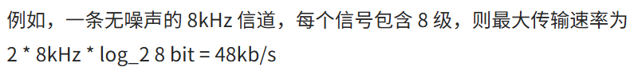
Shannon’s theorem 香农定理 flashcard
- 条件：在受高斯白噪声干扰的信道中
- 用 W 表示信道的 (模拟) 带宽，S 表示信号平均功率，N 表示高斯噪声功率，则极限数据速率是 W log₂(1 + S/N) (b/s)。
- 信噪比 Signal-to-Noise Ratio, SNR：公式中的 S/N 就是信噪比，没有单位；但为了方便表示更大的范围，也用 10lg(S/N) 表示信噪比，单位为分贝 dB（比如用50分贝来表示10的五次方的信噪比）。就是说如果看到分贝单位的信噪比需要进行换算之后还原成普通信噪比代入公式.
求极限数据速率例题 flashcard
- 对于给出了 V (信号电平数) 的情况，无论是否说明无噪声都应使用 Nyquist’s theorem 确定 data rate 的一个上界。
- 对于给出了 SNR (信噪比) 的情况，也应根据 Shannon’s theorem 确定另一个上界。
示例一：电话系统
电话系统的典型参数是信道带宽为 3000Hz，信噪比为 30dB，则该系统的最大数据传输速率为： 3k×log2(1+10^(30/10)) b/s≈30kb/s
示例二：结合两种定理
二进制信号在信噪比为 127:1 的 4kHz 信道上传输，求最大数据传输速率。【2进制信号可以理解成2元信号】
- 根据 Nyquist’s theorem，最大数据速率为2×4k×log2(2) b/s=8kb/s
- 根据 Shannon’s theorem，最大数据速率为4k×log2(1+127) b/s=28kb/s
结论： 二者均为上界，应取其中较小的一个，因此该信道的最大数据传输速率为 8kb/s。示例三 无意义信息
- 一条无噪声的 8kHz 信道，每个信号包含 8 级，每秒采样 24k 次，那么可以获得的最大传输速率是？
- 无噪声 - Nyquist, data rate = 2 * 8kHz * log₂(8) bit/symbol = 48kbps
- “题目中给出的每秒采样 24k 次是无意义的，因为超过了波特率的上限 2W = 16 kBaud，所以 72kbps 是错误答案”
示例四 不乘2的情况
- 一个信道每 1/8s 采样一次，传输信号共有 16 中变化状态，最大数据传输速率是？【最大采样是带宽的2倍，这里已经告诉我们采样频率了就不乘2了】
- 8Baud * log₂(16) bit/symbol = 32bps
3 信息交互方式 flashcard
- 单工链路 simplex link - 1条信道，固定单向通信。【 广播】
- 半双工链路 half-duplex link - 2条信道，双向可通信但不能同时。【 对讲机】
- 全双工链路 full-duplex link - 2条信道，两边可以同时收发。【 打电话】
- 注意2条 channel 不一定需要2条物理链路，一条通过一些复用方式或者双向传输也可以实现。
4 传输介质 / 传输媒体 flashcard
Transmission media，数据传输系统中发送设备和接收设备之间的物理通路。
- 导向传输介质 Guided trans media
- 双绞线 twisted pair：绞合以【减少相邻导线的电磁干扰】。
- 在双绞线外加一层金属丝编织的屏蔽层，可以进一步【提高抗电磁干扰的能力 】，称为屏蔽双绞线 STP, Shielded Twisted Pair
- 没有屏蔽层的称为非屏蔽双绞线 UTP, Unshielded Twisted Pair。
- 同轴电缆 coaxial cable
- 光纤 fiber optics
- 双绞线 twisted pair：绞合以【减少相邻导线的电磁干扰】。
- 非导向传输介质 / 无线传输 Wireless transmission
- 无线电波 Radio：有较强的穿透能力，不需对准某个方向；无线手机通信、WLAN (wireless local area network) 等。
- 微波、红外线、激光：有很强的方向性，直线传播。
5 数字调制 / 数字数据到模拟信号
数据与代表它们的信号之间的转换过程称为数字调制 digital modulation。
5.1 基带传输 Baseband Transmission flashcard
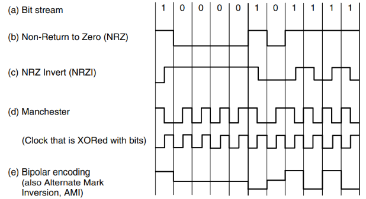
直接将数据转换为数字信号，数字信号是离散的，占用传输介质上的全部频率，用于有线介质 (光纤不是基带传输) 【编码】
- **Non-Return to
Zero
- 用正电压 / 有光表示 1，负电压 / 没有光表示 0。
- 问题是如果 0 和 1 交替，接收端可以在每一次变化时校准；但是如果一直是 0 或者 1 的话过一段时间可能就数错了会失去同步。
- Manchester (以太网 Ethernet 的编码方式)
- 用一个高和一个低表示1，一个低一个高表示0 (实际上就是与一个时钟信号做了 XOR，如图)。解决了时钟信号的问题，即每个码元中间一定有电平跳变。
- 问题是带宽开销增大了—倍。
- NRZI NRZ Invert (USB 2.0 的编码方式)：
- 用信号翻转表示 1，信号不变表示 0。没有带宽开销的增加；
- 解决了一长串都是 1 的问题；但是如果一长串都是 0 还是不行。
- 4B/5B mapping：
- 把4bit的data重新映射到一套新的5bit编码
- 经过设计的新编码保证映射结果最多只会出现连续 3 个 0，就能解决NRZI NRZ Invert的问题。虽然增加了 25% 的开销，但是比 Manchester 好一些。
- 扰频/倒频 scrambling：
- 尝试解决一长串 0 和 1 的问题。发送数据之前，用一个伪随机序列 XOR 数据，接收器用同样的序列 XOR 后得到结果。
- 但是其实不太靠谱如果信号和xor数据一模一样的话异或完全是0，而且容易被截获
- 双极编码 bipolar encoding / AMI, Alternate Mark Inversion：
- 这种编码方式关注信号的平衡性；短时间内正电压和负电压一样多的信号称为平衡信号 balanced signal。这样的信号均值为0，即没有直流分量；由于传输介质的物理性质，没有直流分量是一个优点。
- 这种编码方式用 +1 或者 -1 表示 1，每次的 1 与前一次的 1 表示法相反，保证最多只差 1 个；用 0 表示 0。
- 8B/10B 编码模式：
- 同时考虑这些问题，通过映射保证没有超过 5 个连续的 0 或 1，同时保持 0 和 1 数目相对均等；其额外带宽消耗也只有 25%
5.2 通带传输 Passband Transmission flashcard
通过调节载波信号的幅值、相位或频率来运载数据，占据载波信号频率为中心的一段频带，用于无线和光纤信道。【 调制】
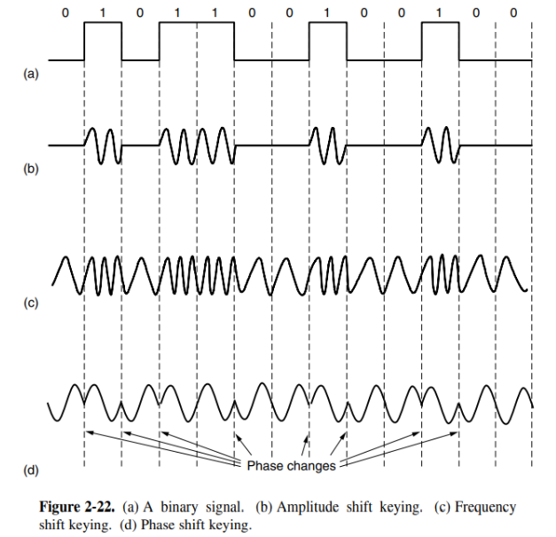
- 幅移键控 ASK, Amplitude Shift Keying：
- 通过两个不同的振幅分别表示 0 和 1；可以用更多的幅值等级表示更多的信息。
- 频移键控 FSK, Frequency Shift Keying：
- 类似地，通过不同频率表示不同的码元。
- 相移键控 PSK, Phase Shift Keying：
- 将载波波形偏移—定的相位。
- 二进制相移键控 BPSK, Binary PSK：将波形偏移 0° 和 180°。
- 正交相移键控 QPSK, Quadrature PSK：将波形偏移 45°, 135°, 225° 和 315°。
- 将载波波形偏移—定的相位。
叠加综合
- 星座图 constellation diagram：为了让每个码元传输更多 bit 的信息，也可以将这些方式综合起来使用。下面的星座图用黑点表示一个合法的振幅和相位的组合，每一个symbol可能是这n个黑点中的一个
- 其中每个黑点到原点的距离表示振幅，
- 和 x 轴正方向所成角度表示相位偏移。
- 正交调幅 QAM, Quadrature Amplitude Modulation：上图 (a) 即为前述 QPSK，而后面两个图是 QAM 【正交相移键控x调幅】的两个实例，它们的每个 symbol 分别携带 4 bit 和 6 bit 的信息。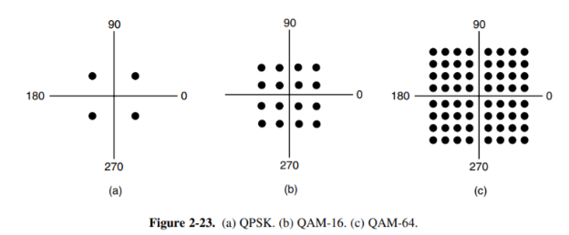
- Gray code：为星座图分配每个黑点代表的 bit 时，需要考虑少量的突发噪音不会导致很多 bit 出错。可以使用 Gray code 解决这一问题（相邻点的 bit 码仅相差一位）。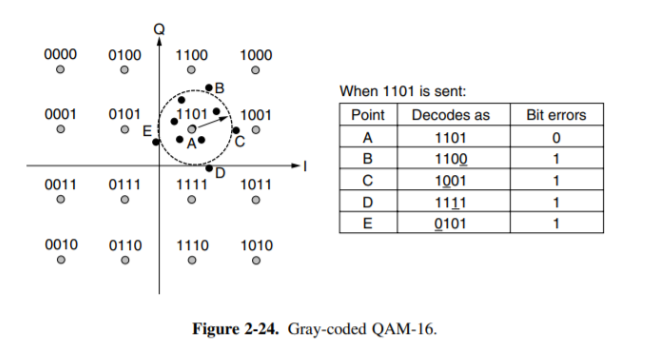
6 多路复用
频分复用 FDM, Frequency Division Multiplexing flashcard
经过调制后，要传输的信号所占带宽是有限的；而线路可使用的带宽远大于这一宽度。
我们可以对多路信号采用不同频率进行调制，使得调制后各路信号频率不同，不会互相干扰；即将信道带宽分割为多种不同频带的子信道，实现多路复用。
- 每个频带之间保留足够宽的距离，保证相邻的频带不会相互重叠。这一部分保护间隙称为保护频带 guard band。 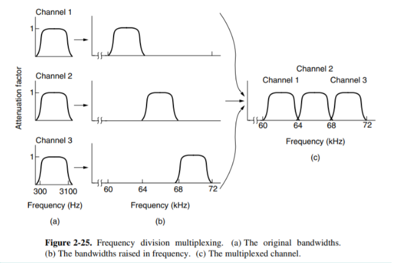
- 正交频分复用 OFDM, Orthogonal FDM：基本思想是：每个子载波相互正交；即每个子载波在其子载波的中心频率处能量为0。这样在每个子载波中心频率处取样，就不会被其他子载波干扰了。这样的方式不需要 guard band，且频带利用率很高。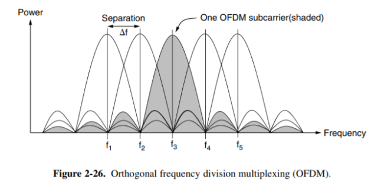
时分复用 TDM, Time Division Multiplexing flashcard
每个用户周期性地轮流工作，每次在一个非常短的时间内获得整个带宽。类似于频分复用，时分复用也可能会需要增加保护时间 guard time，保证不重叠
- 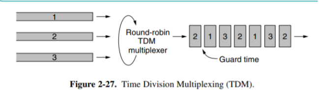
- TDM 的调度方式是机械的，一种动态按需分配时间片的方式是统计时分复用 STDM, Statistical TDM。但是需要额外的信息来标识可能效率反而会变低
码分复用 CDM, Code Division Multiplexing/码分多址CDMA, Code Division Multiple Access#flashcard flashcard
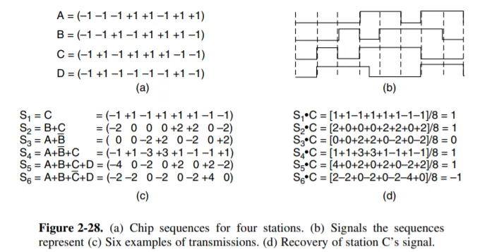
- 若干由 1 或 -1 组成的序列S, Sˉ 表示其反码 (序列中的每个数取其相反数)。
- 对于任意两个序列 S 和 T，其归一化内积 (normalized inner product) =内积（对应位置相乘的积相加）/m，其中 m 是序列的长度，此处为 8。
- 容易理解，有 S⋅S=1，S⋅Sˉ=−1。若 S⋅T=0，我们称这两个序列是正交 (orthogonal) 的； 显然此时 Sˉ⋅T=S⋅Tˉ=Sˉ⋅Tˉ=0。根据这一定义，图中 (a) 的 4 个序列ABCD是两两正交的。
- 现在我们尝试利用这些序列发送信号。每个发送端（ABCD）被分配了一个序列；
- 每一个周期中，发送端可以选择发送 1 (通过发送这个序列)，或者发送 0 (通过发送这个序列的反码)，或者什么都不发送。当多个站同时发送时，它们发送的信号会叠加起来；
- 但是由于序列的正交性，我们可以将每个站发送的信息单独解码出来。假设在某一个周期中，A 和 D 发送了 0，B 发送了 1，C 什么都没有发送，那么叠加出的信号就形如 S=Aˉ+B+Dˉ=(1,−1,3,−1,1,3,−1,−1)。我们将这个信号与 B 作归一化内积：
S⋅B=8−1+1+3+1+1+3−1+1=1
- 即 B 发送的是 1。如果与 C 作归一化内积，则结果为 0，表示 C 什么都没有发送。如果与 A 或 D 做归一化内积，则结果为 -1，表示发送的是反码 (即 0)。这是因为，归一化内积满足分配律，S⋅D=(Aˉ+B+Dˉ)⋅D=Aˉ⋅D+B⋅D+Dˉ⋅D，而前两项由于正交性为 0，第三项为 -1，因此最终结果为 -1；其他的情况也是类似的。
- 下面回顾我们做了什么。我们==在原本需要发送 1个 bit 的时间发送了
m个 bit 组成的序列==，这样的序列可以有m个且两两正交 (考虑正交矩阵)，==从而满足m个发送方同时互不干扰地传输的需要==。同时由于我们在单位时间内传输的 bit 数是原来的m倍，因此==所需要的带宽也是原来的m倍==。如此我们将一个窄带信号扩展到了一个很宽的频带上，这样更能容忍干扰，同时允许多个用户共享同一个频带。
7 公共电话交换网络 The Public Switched Telephone Network, PSTN flashcard
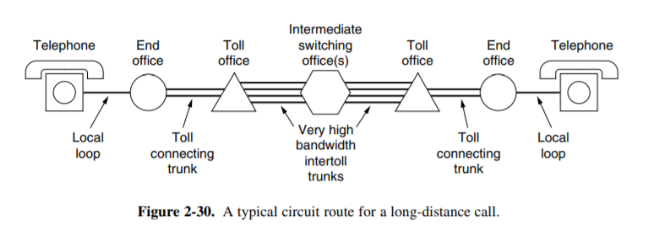
7.1 本地回路 Local Loop flashcard
- 调制解调器 modem: 调制器 modulator 和 解调器 demodulator 的缩写，数字信息和模拟信号流之间的转换。
- 非对称用户线 ADSL Asymmetric Digital Subscriber Line: 使用 FDM。在过去，整个电话系统中的传输都是模拟的，实际的语音信号以电压的形式从源端传输到接收方。
7.2 中继线 Trunk flashcard
- 编码解码器 codec: coder-decoder，模拟信号转为数字信号，使用脉冲编码调制 PCM, Pulse Code Modulation。
- 波分复用 WDM, Wavelength Division Multiplexing：感觉和频分复用差不多，毕竟频率和波长没啥区别。可能 FDM 用来说电，WDM 用来说光这个样子。
7.3 交换 Switching flashcard
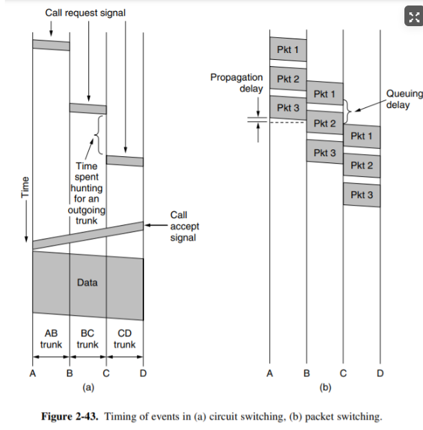
- 电路交换 Circuit Switching:
- 先建立连接，然后直接发，最后释放连接；过程中路径被独占。路径的结点收到就立刻发给下一个结点，不储存。
- 报文交换 Message Switching
- 不需要建立连接。报文携带目的地址和源地址，途中每个结点在收到整个 message 以后再找下一条路进行传输。
- 这样可以动态选择合适空闲的线路，增加线路的可靠性和利用率。但是会引起转发时延，并需要缓存空间。
- 分组交换 / 包交换 Packet Switching
- 将报文合理分块，增加携带分组编号等信息。
- 在报文交换的基础上，缩短了时延，减少了期望的出错重发数据量，同时由于 packet 的长度有所限制，存储管理也方便了很多；动态寻找线路时各个 packet 也可以选择不同路径 (因此，packet 的数据不一定按序到达)。问题是额外信息量进一步增加，且发送前和接收后的工作量也会增加。